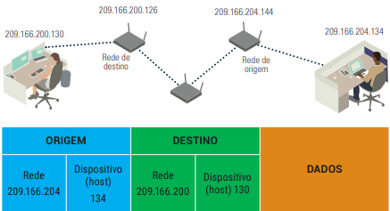
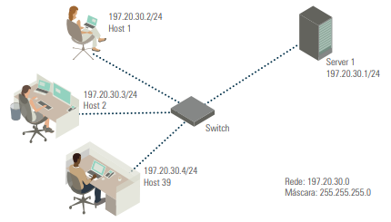
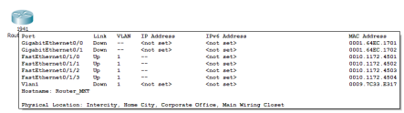
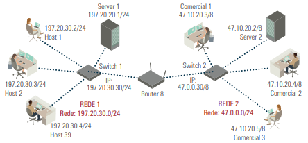

A comunicação entre dispositivos em uma rede depende do uso de equipamentos como switches e roteadores, bem como da adoção do protocolo TCP/IP. O endereço lógico utilizado é o IP, enquanto cada dispositivo possui também um endereço físico (MAC Address).
MAC Address: É um identificador único de 48 bits usado para identificar fisicamente dispositivos em uma rede. Ele contém:
| Campo | Descrição |
|---|---|
| I/G | Indica se o endereço é individual (0) ou de grupo (1). |
| G/L | Define se o endereço é global (definido pelo IEEE) ou local. |
| OUI | Identificador único do fabricante (22 bits). |
| Identificador | Identifica a interface de rede (24 bits). |
O endereço IP possui 32 bits (4 bytes), organizados em quatro blocos decimais. Para que um dispositivo acesse a rede, precisa das seguintes informações:
Exemplo: IP – 192.168.12.3 | Máscara – 255.255.255.0
Os endereços IP são divididos em classes (A, B, C, D e E), definidas por tamanho fixo para facilitar a distribuição. A tabela a seguir apresenta essas classes:
| Classe | Primeiro Octeto | Máscara-padrão | Nº de Redes | Hosts por Rede |
|---|---|---|---|---|
| A | 1 – 127 | 255.0.0.0 | 126 | 16.777.214 |
| B | 128 – 191 | 255.255.0.0 | 16.382 | 65.534 |
| C | 192 – 223 | 255.255.255.0 | 2.097.150 | 254 |
| D | 224 – 239 | Multicast | – | – |
| E | 240 – 245 | Experimental | – | – |
Importante: dois endereços são reservados por rede – um para o identificador da rede e outro para o broadcast.
Trabalha na camada de enlace, utiliza MAC Address e possui várias portas. Um switch conecta computadores dentro de uma mesma rede. Recomenda-se não interligar switches diretamente para evitar sobrecarga de broadcast.
Trabalha com endereços IP, interliga diferentes redes. Utiliza uma tabela de roteamento para encaminhar pacotes. Cada interface do roteador deve estar configurada com um IP da rede à qual está conectada.
Usando comandos como ipconfig /all (Windows) ou ifconfig (Linux), é possível obter informações de rede:
O comando ping testa conectividade entre dispositivos. Envia pacotes para um IP-alvo e verifica o retorno.
Sem roteador, redes diferentes não se comunicam. Exemplo: REDE 1 (197.20.30.0/24) e REDE 2 (47.0.0.0/8). Comando ping não terá sucesso entre elas.
Adicionando um roteador com IPs em ambas as redes, é possível permitir a comunicação entre elas.
Recomenda-se que veja a aula narrada na aula 8 da unidade 2.
O capítulo explicou os conceitos de endereço físico (MAC) e lógico (IP), classes de IP, estrutura de rede e testes básicos com comandos como ipconfig e ping. O entendimento desses conceitos é essencial para configurar, testar e manter redes de computadores.